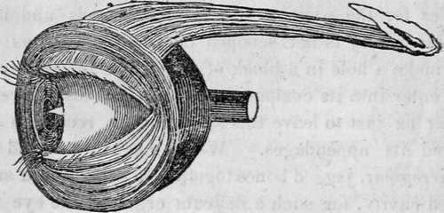

The Sense Of Sight. Part 8
Description
This section is from the book "Human Physiology For The Use Of Elementary Schools", by Charles Alfred Lee. Also available from Amazon: Human Physiology, for the Use of Elementary Schools.
The Sense Of Sight. Part 8
41. Defences And Appendages Of The Eye
These are the orbit, the eyebrows, the eyelashes, the eyelids, and the lachrymal apparatus. The orbit is a four sided vault, composed of seven bones, and shaped like a pyramid or cone, the apex pointing backwards. The eyeball and the orbit seem exactly made for each other; the one being globular, the other rounded to receive it. At the bottom of the orbit are holes for the passage of the blood vessels and nerves. Now this cavity is not scooped out of the skull, as a boy would make a hole in a block of wood, but the seven bones, which enter into its composition, are so curiously dove tailed together as just to leave this space for the reception of the eye and its appendages. What mechanic could place seven irregular, jagged bones together so as to form a smooth, polished cavity, for such a delicate organ as the eye to roll in ! So securely is the eye protected by its bony house or encasement, that it is a very rare thing for it to be injured, except by some sharp pointed object.
42. The eye then is surrounded on every side with bone, except the front; now, what have we here to serve as a means of defence ? It would not have answered our purpose to have had it entirely shut up in a box of bones, or even to have left a little hole just to peep through. As we cannot draw our heads into a shell when danger threatens, like a snail or turtle, we are furnished with a couple of moveable curtains or eyelids, placed before the eyes, which we can let down or raise up just when we please. If the eyes are "the windows of the soul," then I would call the lids a pair of inimitable window shutters, for they exclude the light whenever its presence would be disagreeable to us.
43. The eyelids are composed of a thin skin, externally ; internally of cellular membrane,-its cells filled with a soft semi transparent fluid ; while their inner surface, in contact with the eye, is lined with a delicate mucous membrane, continuous with the skin, called conjunctiva. Besides these there are beneath the iskin, two sets of muscular fibres; one called orbicular, running round the lid horizontally, whose contraction serves to close the eye ; the other lying beneath, are the fibres of the levator muscle, which serves to raise the lid, or open the eye. These two muscles are well exhibited in the following cut:
Muscles of the eyelids the elevator passing back into the orbit; the sphincter, or orbicular muscle surrounding the eye.
44. Around the margin of each lid, there is a delicate elastie cartilage placed, which serves- to preserve the shape of the lid ; and into this, as is shown in the cut, the fibres of the elevator muscle, are inserted. In contact and around each cartilage, on its anterior surface, at the root of the eyelashes, is situated a row of little bags or follicles, which secrete an oily fluid, to keep the parts soft and pliant, and prevent the lids from sticking together. It is this matter which we often find in the morning, collected on the margin of the lids, or in the internal angle of the eye.
45. Now, mark this difference ; the levator muscle, which rises from the bottom of the orbit, is entirely under the control of the will; the orbicular muscle is not. See the advantage of this. If we had always to issue a command of the will to shot the eyes, before going to sleep, I imagine there are a good many in this lazy world who would forget to shut their eyes, and so go to sleep with them wide open. To what dangers would they be exposed, and what injuries might they not sustain in consequence! But watch a sleepy person. No sooner does he begin to grow drowsy, than his eyes begin to close; in other words, " they grow heavy." If he wishes to keep awake he makes a desperate effort to open his lids ; and in the drunkard, whose involuntary muscles overpower the voluntary ones, it is quite ludicrous to watch the expression of countenance, and see how quick the disobedient, rebel lids close, upon the oft repeated efforts to keep them open.
46. The opening and closure of the lids ordinarily occupies about the eighth part of a second, so that there is no interruption to the continuance cf vision. Besides serving as a curtain to protect the eye, the lids serve, by their motions to diffuse the tears and mucous secretions, thus keeping the surface of the cornea moist, and wiping off any foreign matter, as dust, that may be lodged on it. The eyelids when closed, do not entirely prevent the transmission of light; for when we have been refreshed by sleep, the stimulus of the light falling upon the lids, is sufficient to arouse sensibility and awake us.
47. It is a curious fact, that while the upper eye lid falls, the lower eye lid is moved towards the nose, and thus aids in collecting all offensive particles in the corner of the eye. This can readily be shown by marking the edges of the lids with a black spot; when the lids are opened and closed, the spot on the upper eye lid will rise and fall perpendicularly, while that on the lower one will play horizontally like a weaver's shuttle. When any thing gets into the eye, there is this continual play of the lids maintained, till the offending particles have been driven into the inner corner of the eye, when relief is at once obtained. When the object is very small, or not sufficiently irritating to excite these muscles of the lids to action, it is common to place an eye stone, which is a smooth piece of sulphate of lime in the eye. This not only excites an abundant secretion of tears, but also causes the necessary motions of the lids, by which the object is soon washed into the angle of the eye.
48. Many animals have what may be called a third eyelid, called the nicitating membrane. This slides from one angle of the eye to the opposite side, under the lids, whether open or shut. Its use is to clear away all matter which might be irritating to the eye. Birds that see best by night, such as owls, defend their eyes against the light of the sun, by drawing this curtain over them.
Continue to:
Tags
humans, anatomy, skeleton, bones, physiology, organs, nerves, brain